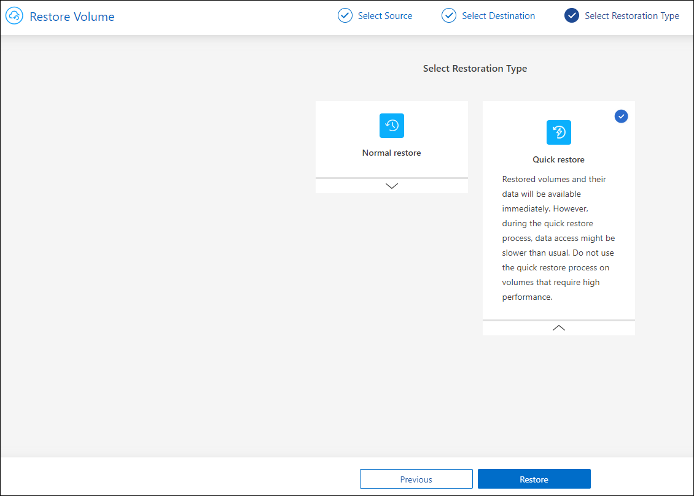
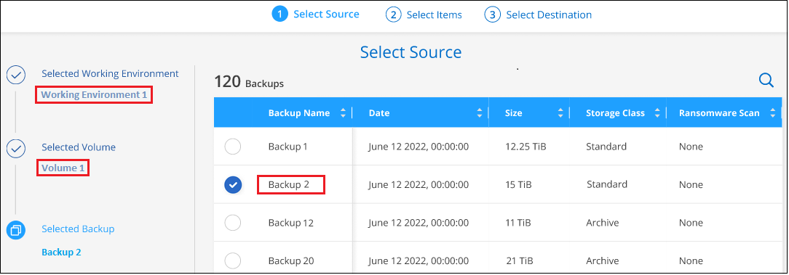

发行说明
发行说明
从备份文件还原ONTAP数据
 建议更改
建议更改
ONTAP卷数据的备份可从创建备份的位置获得：Snapshot副本、复制的卷以及存储在对象存储中的备份。您可以从其中任何一个备份位置从特定时间点还原数据。您可以从备份文件还原整个ONTAP卷、或者如果您只需要还原几个文件、则可以还原文件夹或单个文件。
-
您可以将 * 卷 * （作为新卷）还原到原始工作环境，使用相同云帐户的其他工作环境或内部 ONTAP 系统。
-
您可以将*文件夹*还原到原始工作环境中的卷、使用相同云帐户的其他工作环境中的卷或内部ONTAP 系统上的卷。
-
您可以将 * 文件 * 还原到原始工作环境中的卷，使用相同云帐户的其他工作环境中的卷或内部 ONTAP 系统上的卷。
要将数据从备份文件还原到生产系统、需要有效的BlueXP备份和恢复许可证。
概括地说、以下是可用于将卷数据还原到ONTAP工作环境的有效流：
-
备份文件→已还原卷
-
复制的卷→已还原的卷
-
Snapshot副本→已还原卷
还原信息板
您可以使用还原信息板执行卷、文件夹和文件还原操作。要访问还原信息板、请单击BlueXP菜单中的*备份和恢复*、然后单击*还原*选项卡。您也可以单击  >从"服务"面板的备份和恢复服务中查看*还原信息板*。
>从"服务"面板的备份和恢复服务中查看*还原信息板*。

|
必须已为至少一个工作环境激活BlueXP备份和恢复、并且必须存在初始备份文件。 |

如您所见，还原信息板提供了两种不同的方法来从备份文件还原数据： * 浏览和还原 * 和 * 搜索和还原 * 。
比较浏览和还原以及搜索和还原
概括地说、当您需要从过去一周或一个月还原特定卷、文件夹或文件时、_Browse & Restore"通常会更好—您知道文件的名称和位置、以及文件的最后一个状态良好的日期。通常、当您需要还原卷、文件夹或文件时、_Search & Restore"会更好、但您不记得确切的名称、卷所在的卷或最后一个状态良好的日期。
下表对这两种方法进行了功能比较。
| 浏览和还原 | 搜索和还原 |
|---|---|
浏览文件夹样式的结构以查找单个备份文件中的卷、文件夹或文件。 |
按部分或完整卷名称、部分或完整文件夹/文件名称、大小范围和其他搜索筛选器在*所有备份文件*中搜索卷、文件夹或文件。 |
如果文件已删除或重命名、并且用户不知道原始文件名、则不会处理文件恢复 |
处理新创建 / 删除 / 重命名的目录以及新创建 / 删除 / 重命名的文件 |
无需额外的云提供商资源 |
从云中还原时、每个帐户需要额外的存储分段和公共云提供商资源。 |
无需额外的云提供商成本 |
从云中还原时、扫描备份和卷以查找搜索结果需要额外的成本。 |
支持快速还原。 |
不支持快速还原。 |
此表根据备份文件所在的位置列出了有效的还原操作。
| 备份类型 | 浏览和还原 | 搜索和还原 | ||||
|---|---|---|---|---|---|---|
还原卷 |
恢复文件 |
恢复文件夹 |
还原卷 |
恢复文件 |
恢复文件夹 |
|
Snapshot 副本 |
是的。 |
否 |
否 |
是的。 |
是的。 |
是的。 |
复制的卷 |
是的。 |
否 |
否 |
是的。 |
是的。 |
是的。 |
备份文件 |
是的。 |
是的。 |
是的。 |
是的。 |
是的。 |
是的。 |
在使用任一还原方法之前，请确保已为环境配置了唯一的资源要求。以下各节将介绍这些要求。
请参见要使用的还原操作类型的要求和还原步骤：
-
<<Restoring ONTAP data using Search & Restore,使用Search amp；Restore还原卷、文件夹和文件
使用浏览和还原还原ONTAP数据
在开始还原卷、文件夹或文件之前、您应知道要还原的卷的名称、卷所在工作环境和SVM的名称以及要从中还原的备份文件的大致日期。您可以从Snapshot副本、复制的卷或对象存储中存储的备份还原ONTAP数据。
*注意：*如果包含要还原的数据的备份文件驻留在归档云存储中(从ONTAP 9.10.1开始)、则还原操作将需要较长的时间、并会产生成本。此外、目标集群还必须运行ONTAP 9.10.1或更高版本来还原卷、运行9.11.1来还原文件、运行9.12.1来还原Google Archive和StorageGRID 、运行9.13.1来还原文件夹。
|
|
将数据从Azure归档存储还原到StorageGRID 系统时、不支持高优先级。 |
浏览并还原支持的工作环境和对象存储提供程序
您可以从二级工作环境(复制的卷)或对象存储(备份文件)中的备份文件将ONTAP数据还原到以下工作环境。Snapshot副本位于源工作环境中、只能还原到同一系统。
*注意：*您可以从任何类型的备份文件还原卷、但此时只能从对象存储中的备份文件还原文件夹或单个文件。
从对象存储(备份) |
从主存储(Snapshot) |
从二级系统(复制) |
至目标工作环境 |
Amazon S3 |
AWS 中的 Cloud Volumes ONTAP |
AWS 中的 Cloud Volumes ONTAP |
Azure Blob |
Azure 中的 Cloud Volumes ONTAP |
Azure 中的 Cloud Volumes ONTAP |
Google Cloud 存储 |
Google 中的 Cloud Volumes ONTAP |
Google内部部署ONTAP 系统中的Cloud Volumes ONTAP endf：gcp[] |
NetApp StorageGRID |
内部部署 ONTAP 系统 |
内部部署 ONTAP 系统 |
到内部ONTAP系统 |
ONTAP S3 |
内部部署 ONTAP 系统 |
内部部署 ONTAP 系统 |
对于浏览和还原、可以将连接器安装在以下位置：
-
对于Amazon S3、Connector可以部署在AWS或内部环境中
-
对于StorageGRID 、连接器必须部署在您的内部环境中；可以访问Internet、也可以不访问Internet
-
对于ONTAP S3、连接器可以部署在您的内部环境(无论是否可访问Internet)或云提供商环境中
请注意， " 内部 ONTAP 系统 " 的引用包括 FAS ， AFF 和 ONTAP Select 系统。
|
|
如果系统上的ONTAP 版本低于9.13.1、则如果备份文件已配置DataLock和防软件、则无法还原文件夹或文件。在这种情况下、您可以从备份文件还原整个卷、然后访问所需的文件。 |
使用浏览和放大功能还原卷；还原
从备份文件还原卷时、BlueXP备份和恢复会使用备份中的数据创建一个_new_卷。从对象存储使用备份时、您可以将数据还原到原始工作环境中的卷、与源工作环境位于同一云帐户中的其他工作环境或内部ONTAP系统。
在使用ONTAP 9.13.0或更高版本将云备份还原到Cloud Volumes ONTAP系统或运行ONTAP 9.14.1的内部ONTAP系统时、您可以选择执行_quick Restore_oper统。快速还原非常适合需要尽快提供对卷的访问权限的灾难恢复情形。快速还原会将元数据从备份文件还原到卷、而不是还原整个备份文件。不建议对性能或延迟敏感型应用程序执行快速还原、归档存储中的备份也不支持快速还原。
|
|
只有在创建云备份的源系统运行的是ONTAP 9.12.1或更高版本时、FlexGroup卷才支持快速还原。并且、只有当源系统运行的是ONTAP 9.11.0或更高版本时、SnapLock卷才支持此功能。 |
从复制的卷还原时、您可以将卷还原到原始工作环境、Cloud Volumes ONTAP或内部ONTAP系统。

如您所见、要执行卷还原、您需要知道源工作环境名称、Storage VM、卷名称和备份文件日期。
以下视频显示了还原卷的快速演练：
-
从BlueXP菜单中、选择*保护>备份和恢复*。
-
单击 * 还原 * 选项卡，此时将显示还原信息板。
-
在 Browse & Restore 部分中，单击 * 还原卷 * 。

-
在 _Select Source" 页面中，导航到要还原的卷的备份文件。选择 * 工作环境 * ， * 卷 * 以及具有要还原的日期 / 时间戳的 * 备份 * 文件。
"位置"列显示备份文件(Snapshot)是*本地*(源系统上的Snapshot副本)、二级(二级ONTAP系统上的复制卷)还是*对象存储*(对象存储中的备份文件)。选择要还原的文件。

-
单击 * 下一步 * 。
请注意、如果您选择对象存储中的备份文件、并且该备份的勒索软件保护处于活动状态(如果您在备份策略中启用了DataLock和勒索软件保护)、则系统会提示您在还原数据之前对备份文件运行额外的勒索软件扫描。我们建议您扫描备份文件以查找勒索软件。(您需要支付额外的云提供商传出费用、才能访问备份文件的内容。)
-
在 Select Destination 页面中，选择要还原卷的 * 工作环境 * 。

-
从对象存储还原备份文件时、如果选择内部ONTAP系统、并且尚未配置与对象存储的集群连接、则系统会提示您输入追加信息：
-
从 Amazon S3 还原时，请选择目标卷所在 ONTAP 集群中的 IP 空间，输入您创建的用户的访问密钥和机密密钥，以便为 ONTAP 集群授予对 S3 存储分段的访问权限。 此外，还可以选择一个专用 VPC 端点来实现安全数据传输。
-
从StorageGRID 还原时、输入StorageGRID 服务器的FQDN以及ONTAP 与StorageGRID 进行HTTPS通信时应使用的端口、选择访问对象存储所需的访问密钥和机密密钥、以及目标卷所在的ONTAP 集群中的IP空间。
-
从ONTAP S3还原时、输入ONTAP S3服务器的FQDN以及ONTAP与ONTAP S3进行HTTPS通信时应使用的端口、选择访问对象存储所需的访问密钥和机密密钥。 以及目标卷将驻留的ONTAP集群中的IP空间。
-
输入要用于还原的卷的名称、然后选择此卷要驻留的Storage VM和聚合。还原FlexGroup卷时、您需要选择多个聚合。默认情况下，使用 * <source_volume_name>_Restore* 作为卷名称。

在使用ONTAP 9.13.0或更高版本将对象存储备份还原到ONTAP系统或运行Cloud Volumes ONTAP 9.14.1的内部ONTAP系统时、您可以选择执行_quick Restore_oper统。
-
如果您要从位于归档存储层（从 ONTAP 9.10.1 开始提供）中的备份文件还原卷，则可以选择还原优先级。
-
-
-
单击*Next*(下一步*)选择是执行正常恢复还是快速恢复过程：

-
正常还原：对需要高性能的卷使用正常还原。在还原过程完成之前、卷将不可用。
-
快速还原：还原的卷和数据将立即可用。请勿在需要高性能的卷上使用此选项、因为在快速还原过程中、对数据的访问速度可能会比平常慢。
-
-
单击 * 还原 * ，您将返回到还原信息板，以便查看还原操作的进度。
BlueXP备份和恢复会根据您选择的备份创建一个新卷。
请注意，从归档存储中的备份文件还原卷可能需要数分钟或数小时，具体取决于归档层和还原优先级。您可以单击*作业监控*选项卡查看还原进度。
使用浏览和放大功能还原文件夹和文件；还原
如果您只需要从ONTAP 卷备份还原几个文件、则可以选择还原文件夹或单个文件、而不是还原整个卷。您可以将文件夹和文件还原到原始工作环境中的现有卷、也可以还原到使用同一云帐户的其他工作环境。您还可以将文件夹和文件还原到内部ONTAP 系统上的卷。
|
|
此时、您只能从对象存储中的备份文件还原文件夹或单个文件。目前不支持从本地Snapshot副本或二级工作环境(复制的卷)中的备份文件还原文件和文件夹。 |
如果选择多个文件，则所有文件都将还原到您选择的同一目标卷。因此，如果要将文件还原到不同的卷，则需要多次运行还原过程。
使用ONTAP 9.13.0或更高版本时、您可以还原文件夹及其内的所有文件和子文件夹。使用9.13.0之前的ONTAP 版本时、只会还原该文件夹中的文件、而不会还原子文件夹或子文件夹中的文件。
|
|
|
前提条件
-
要执行_files_还原操作、ONTAP 版本必须为9.6或更高版本。
-
要执行_folder_还原操作、ONTAP 版本必须为9.11.1或更高版本。如果数据位于归档存储中、或者备份文件正在使用DataLock和防兰软件保护、则需要ONTAP 9.13.1版。
文件夹和文件还原过程
此过程如下所示：
-
如果要从卷备份还原文件夹或一个或多个文件、请单击*还原*选项卡、然后单击_Browse & Restore_下的*还原文件或文件夹*。
-
选择文件夹或文件所在的源工作环境、卷和备份文件。
-
BlueXP备份和恢复将显示选定备份文件中的文件夹和文件。
-
选择要从该备份还原的文件夹或文件。
-
选择要还原文件夹或文件的目标位置(工作环境、卷和文件夹)、然后单击*还原*。
-
文件已还原。

如您所见、要执行文件夹或文件还原、您需要知道工作环境名称、卷名称、备份文件日期和文件夹/文件名称。
还原文件夹和文件
按照以下步骤将文件夹或文件从ONTAP 卷备份还原到卷。您应知道要用于还原文件夹或文件的卷名称和备份文件的日期。此功能使用实时浏览功能，以便您可以查看每个备份文件中的目录和文件列表。
以下视频显示了还原单个文件的快速演练：
-
从BlueXP菜单中、选择*保护>备份和恢复*。
-
单击 * 还原 * 选项卡，此时将显示还原信息板。
-
在_Browse & Restore_部分中、单击*还原文件或文件夹*。

-
在_Select Source"页面中、导航到包含要还原的文件夹或文件的卷的备份文件。选择具有要从中还原文件的日期 / 时间戳的 * 工作环境 * ， * 卷 * 和 * 备份 * 。

-
单击*下一步*、此时将显示卷备份中的文件夹和文件列表。
如果要从归档存储层中的备份文件还原文件夹或文件、则可以选择还原优先级。
+
如果对备份文件启用了勒索软件保护(如果在备份策略中启用了DataLock和勒索软件保护)、则系统会提示您在还原数据之前对备份文件运行额外的勒索软件扫描。我们建议您扫描备份文件以查找勒索软件。(您需要支付额外的云提供商传出费用、才能访问备份文件的内容。)
+
-
在_Select items_页面中、选择要还原的文件夹或文件、然后单击*继续*。要帮助您查找项目、请执行以下操作：
-
如果看到文件夹或文件名、可以单击它。
-
您可以单击搜索图标并输入文件夹或文件的名称以直接导航到该项目。
-
您可以使用在文件夹中向下导航级别
 按钮以查找特定文件。
按钮以查找特定文件。选择文件时，这些文件将添加到页面左侧，以便您可以查看已选择的文件。如果需要，您可以单击文件名旁边的 * x * 来从此列表中删除文件。
-
-
在_Select Destination_页面中、选择要还原项目的*工作环境*。

如果选择内部集群，但尚未配置与对象存储的集群连接，则系统会提示您输入追加信息：
-
从 Amazon S3 还原时，输入目标卷所在 ONTAP 集群中的 IP 空间以及访问对象存储所需的 AWS 访问密钥和机密密钥。您还可以选择专用链路配置以连接到集群。
-
从StorageGRID 还原时、输入StorageGRID 服务器的FQDN以及ONTAP 与StorageGRID 进行HTTPS通信时应使用的端口、输入访问对象存储所需的访问密钥和机密密钥、以及目标卷所在ONTAP 集群中的IP空间。
-
然后选择*卷*和*文件夹*、以还原文件夹或文件。

-
-
还原文件夹和文件时、您可以选择一些位置选项。
-
选择 * 选择目标文件夹 * 后，如上所示：
-
您可以选择任何文件夹。
-
您可以将鼠标悬停在某个文件夹上并单击
在行末尾展开以深入到子文件夹，然后选择一个文件夹。
-
-
如果您选择的目标工作环境和卷与源文件夹/文件所在的位置相同、则可以选择*维护源文件夹路径*将文件夹或文件还原到源结构中存在的相同文件夹。所有相同的文件夹和子文件夹都必须已存在；不会创建文件夹。将文件还原到其原始位置时、您可以选择覆盖源文件或创建新文件。
-
单击 * 还原 * ，您将返回到还原信息板，以便查看还原操作的进度。您也可以单击*作业监控*选项卡查看还原进度。
-
-
使用搜索和还原还原 ONTAP 数据
您可以使用搜索和还原从ONTAP 备份文件还原卷、文件夹或文件。使用搜索和还原可以从所有备份中搜索特定卷、文件夹或文件、然后执行还原。您不需要知道确切的工作环境名称、卷名称或文件名、搜索将查找所有卷备份文件。
搜索操作会查看ONTAP卷的所有本地Snapshot副本、二级存储系统上的所有复制卷以及对象存储中的所有备份文件。由于从本地Snapshot副本或复制的卷还原数据比从对象存储中的备份文件还原更快、成本更低、因此您可能需要从这些其他位置还原数据。
从备份文件还原_full volume_时、BlueXP备份和恢复会使用备份中的数据创建一个_new_卷。您可以将数据作为原始工作环境中的卷还原到与源工作环境位于同一云帐户中的其他工作环境或内部ONTAP系统。
您可以将_folder或files_还原到原始卷位置、同一工作环境中的不同卷、使用同一云帐户的不同工作环境或内部ONTAP系统上的卷。
使用ONTAP 9.13.0或更高版本时、您可以还原文件夹及其内的所有文件和子文件夹。使用9.13.0之前的ONTAP 版本时、只会还原该文件夹中的文件、而不会还原子文件夹或子文件夹中的文件。
如果要还原的卷的备份文件驻留在归档存储中(从ONTAP 9.10.1开始可用)、则还原操作将需要较长时间并产生额外成本。请注意、目标集群还必须运行ONTAP 9.10.1或更高版本来还原卷、运行9.11.1来还原文件、运行9.12.1来还原Google Archive和StorageGRID 、运行9.13.1来还原文件夹。
|
|
|
开始之前，您应了解要还原的卷或文件的名称或位置。
以下视频显示了还原单个文件的快速演练：
搜索和还原支持的工作环境和对象存储提供程序
您可以从二级工作环境(复制的卷)或对象存储(备份文件)中的备份文件将ONTAP数据还原到以下工作环境。Snapshot副本位于源工作环境中、只能还原到同一系统。
*注意：*您可以从任何类型的备份文件还原卷和文件、但此时只能从对象存储中的备份文件还原文件夹。
| 备份文件位置 | 目标工作环境 | |
|---|---|---|
对象存储(备份) |
二级系统(复制) |
ifdef::aws[] |
Amazon S3 |
AWS 中的 Cloud Volumes ONTAP |
AWS内部部署ONTAP 系统中的Cloud Volumes ONTAP endf：AWS [] ifdef：：azure[] |
Azure Blob |
Azure 中的 Cloud Volumes ONTAP |
Azure内部ONTAP 系统中的Cloud Volumes ONTAP endf：azure[] ifdef：：gcp[] |
Google Cloud 存储 |
Google 中的 Cloud Volumes ONTAP |
Google内部部署ONTAP 系统中的Cloud Volumes ONTAP endf：gcp[] |
NetApp StorageGRID |
内部部署 ONTAP 系统 |
内部部署 ONTAP 系统 |
ONTAP S3 |
内部部署 ONTAP 系统 |
内部部署 ONTAP 系统 |
对于搜索和还原、可以将连接器安装在以下位置：
-
对于Amazon S3、Connector可以部署在AWS或内部环境中
-
对于StorageGRID 、连接器必须部署在您的内部环境中；可以访问Internet、也可以不访问Internet
-
对于ONTAP S3、连接器可以部署在您的内部环境(无论是否可访问Internet)或云提供商环境中
请注意， " 内部 ONTAP 系统 " 的引用包括 FAS ， AFF 和 ONTAP Select 系统。
前提条件
-
集群要求：
-
ONTAP 版本必须为 9.8 或更高版本。
-
卷所在的 Storage VM （ SVM ）必须已配置数据 LIF 。
-
必须在卷上启用NFS (支持NFS和SMB/CIFS卷)。
-
必须在 SVM 上激活 SnapDiff RPC 服务器。在工作环境中启用索引时、BlueXP会自动执行此操作。(Snap差异 是一种快速识别Snapshot副本之间文件和目录差异的技术。)
-
-
AWS 要求：
-
必须将特定的Amazon Athena、AWS glue和AWS S3权限添加到为BlueXP提供权限的用户角色中。 "确保已正确配置所有权限"。
请注意、如果您已经在使用BlueXP备份和恢复时使用了过去配置的连接器、则现在需要将Athena和粘附权限添加到BlueXP用户角色中。搜索和还原需要使用它们。
-
-
StorageGRID和ONTAP S3要求：
根据您的配置、可通过两种方式实施搜索和还原：
-
如果您的帐户中没有云提供商凭据、则索引目录信息将存储在Connector上。
-
如果您在私有(非公开)站点中使用连接器、则"已为目录创建的"目录"信息将存储在连接器上(需要连接器3.9.25或更高版本)。
-
如果您有 "AWS 凭据" 或 "Azure credentials" 在帐户中、索引目录存储在云提供商处、就像部署在云中的Connector一样。(如果您同时拥有这两个凭据、则默认情况下会选择AWS。)
即使您使用的是内部部署Connector、也必须同时满足云提供商对Connector权限和云提供商资源的要求。使用此实施时、请参见上述AWS和Azure要求。
-
搜索和还原过程
此过程如下所示：
-
在使用搜索和还原之前、您需要在要从中还原卷数据的每个源工作环境上启用"索引编制"。这样，索引目录就可以跟踪每个卷的备份文件。
-
如果要从卷备份还原卷或文件，请在 Search & Restore 下单击 * 搜索和还原 * 。
-
按部分或完整卷名称、部分或完整文件名、备份位置、大小范围、创建日期范围、其他搜索筛选器输入卷、文件夹或文件的搜索条件。 然后单击*Search*。
" 搜索结果 " 页面将显示文件或卷与您的搜索条件匹配的所有位置。
-
单击 * 查看所有备份 * 以查看要用于还原卷或文件的位置，然后在要使用的实际备份文件上单击 * 还原 * 。
-
选择要还原卷、文件夹或文件的位置、然后单击*还原*。
-
卷、文件夹或文件已还原。

如您所见、您实际上只需要知道部分名称、并通过与您的搜索匹配的所有备份文件执行BlueXP备份和恢复搜索。
为每个工作环境启用"已编目"
在使用搜索和还原之前，您需要在计划从中还原卷或文件的每个源工作环境上启用 " 索引编制 " 。这样，索引目录就可以跟踪每个卷和每个备份文件，从而使搜索非常快速高效。
启用此功能后、BlueXP备份和恢复会在SVM上为卷启用SnapDiff v3、并会执行以下操作：
-
对于存储在AWS中的备份、它会配置一个新的S3存储分段和 "Amazon Athena 交互式查询服务" 和 "AWS 无服务器数据集成服务"。
-
对于存储在StorageGRID或ONTAP S3中的备份、它会在Connector或云提供商环境上配置空间。
如果您的工作环境已启用索引，请转到下一节以还原数据。
要为工作环境启用索引编制，请执行以下操作：
-
如果尚未为工作环境编制索引，请在 "Restore Dashboard" 中的 Search & Restore 下，单击 * 为工作环境启用索引 * ，然后单击 * 为工作环境启用索引 * 。
-
如果至少有一个工作环境已编制索引，请在 "Restore Dashboard" 中的 "_Search & Restore" 下，单击 * 索引设置 * ，然后单击 * 为工作环境启用索引 * 。
配置完所有服务并激活索引目录后，工作环境将显示为 "Active" 。

根据工作环境中卷的大小以及所有3个备份位置中的备份文件数量、初始索引编制过程可能需要长达一小时的时间。之后，它会每小时透明地更新一次，并进行增量更改，以保持最新状态。
使用Search & amp；Restore还原卷、文件夹和文件
你先请 已为您的工作环境启用索引编制、您可以使用搜索和还原还原来还原卷、文件夹和文件。这样，您就可以使用多种筛选器来查找要从所有备份文件还原的确切文件或卷。
-
从BlueXP菜单中、选择*保护>备份和恢复*。
-
单击 * 还原 * 选项卡，此时将显示还原信息板。
-
在 Search & Restore 部分中，单击 * 搜索和还原 * 。

-
在Search to Restore页面中：
-
在_Search bag_中、输入完整或部分卷名称、文件夹名称或文件名。
-
选择资源类型：卷、文件、文件夹*或*全部。
-
在_Filter by"区域中、选择筛选条件。例如、您可以选择数据所在的工作环境和文件类型、例如.JPEG文件。或者、如果您只想在对象存储中的可用Snapshot副本或备份文件中搜索结果、也可以选择备份位置类型。
-
-
单击*搜索*、搜索结果区域将显示具有与您的搜索匹配的文件、文件夹或卷的所有资源。

-
找到包含要还原的数据的资源，然后单击*查看所有备份*以显示包含匹配卷、文件夹或文件的所有备份文件。

-
找到要用于恢复数据的备份文件，然后单击*Restore*。
请注意、这些结果将确定搜索中包含该文件的本地卷Snapshot副本和远程复制卷。您可以选择从云备份文件、Snapshot副本或复制的卷还原。
-
选择要还原卷、文件夹或文件的目标位置、然后单击*还原*。
-
对于卷、您可以选择原始目标工作环境、也可以选择备用工作环境。还原FlexGroup卷时、您需要选择多个聚合。
-
对于文件夹、您可以还原到原始位置、也可以选择其他位置、包括工作环境、卷和文件夹。
-
对于文件、您可以还原到原始位置、也可以选择其他位置、包括工作环境、卷和文件夹。选择原始位置时、您可以选择覆盖源文件或创建新文件。
如果您选择内部 ONTAP 系统，但尚未配置与对象存储的集群连接，则系统会提示您输入追加信息：
-
从 Amazon S3 还原时，请选择目标卷所在 ONTAP 集群中的 IP 空间，输入您创建的用户的访问密钥和机密密钥，以便为 ONTAP 集群授予对 S3 存储分段的访问权限。 此外，还可以选择一个专用 VPC 端点来实现安全数据传输。 "查看有关这些要求的详细信息"。
-
从StorageGRID 还原时、输入StorageGRID 服务器的FQDN以及ONTAP 与StorageGRID 进行HTTPS通信时应使用的端口、输入访问对象存储所需的访问密钥和机密密钥、以及目标卷所在ONTAP 集群中的IP空间。 "查看有关这些要求的详细信息"。
-
从ONTAP S3还原时、输入ONTAP S3服务器的FQDN以及ONTAP与ONTAP S3进行HTTPS通信时应使用的端口、选择访问对象存储所需的访问密钥和机密密钥。 以及目标卷将驻留的ONTAP集群中的IP空间。 "查看有关这些要求的详细信息"。
-
-
-
此时将还原卷、文件夹或文件、并将您返回到还原信息板、以便您可以查看还原操作的进度。您也可以单击*作业监控*选项卡查看还原进度。
对于已还原的卷，您可以 "管理此新卷的备份设置" 根据需要。